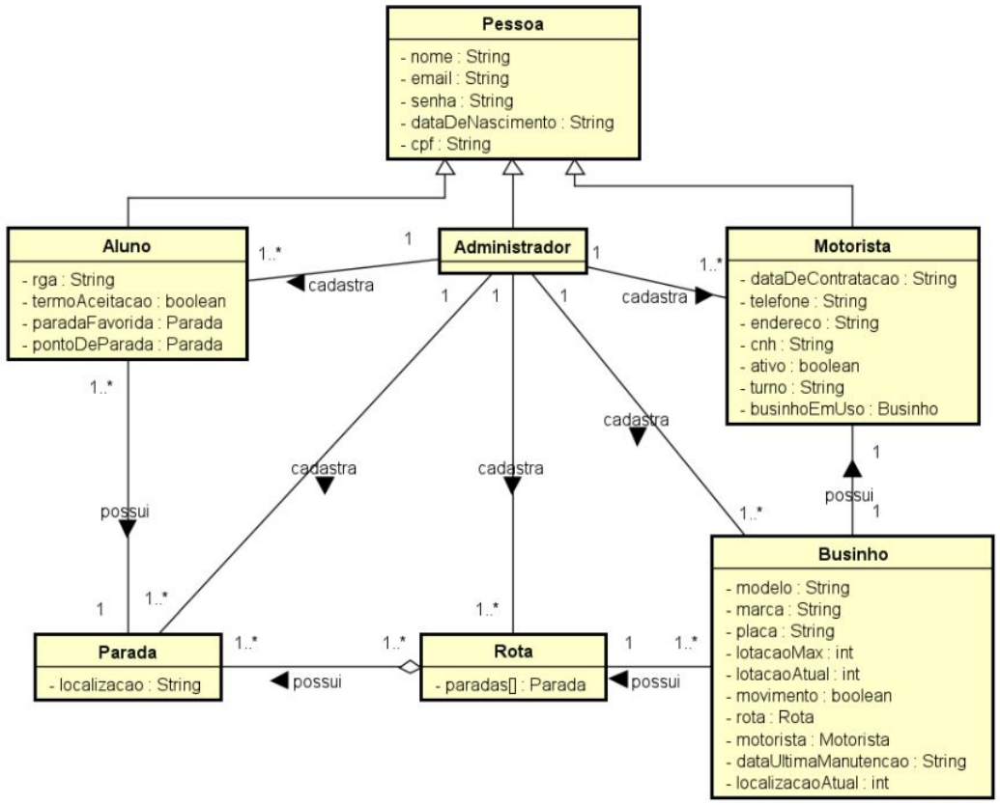
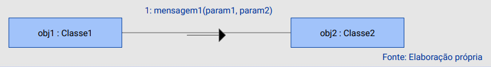
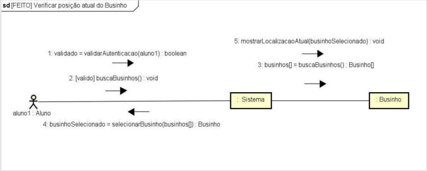
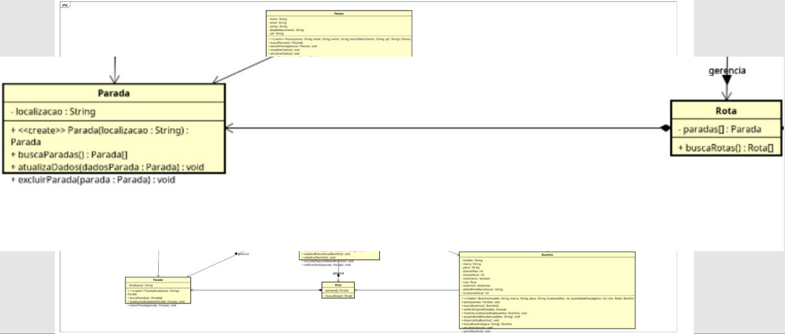

Disciplinas
ANÁLISE E PROJETO DE SOFTWARE ORIENTADO A OBJETOS. Concluído
Materiais
Análise e Projeto de Software Orientado a Objetos - Módulo 2 - Unidade 1 sendProf° ministrante: Luciano Édipo Pereira da Silva.
Conteúdo
Desenho de Projeto Orientado a Objetos.
- Projeto de Software como disciplina;
- Modelagem como Técnica de Projeto;
- Princípios de Modelagem para Projeto;
- Uso de Diagramas em Projeto;
- Diagrama de Comunicação;
- Diagrama de Classes.
Projeto de Software como disciplina.
- O Projeto visa a elaboração de uma solução para o problema identificado e descrito na análise;
- Também é preciso projetar uma arquitetura de software que supra de maneira concreta o propósito do sistema;
- É a fase em que são firmados os detalhes de “como” o sistema pode e deve ser implementado.
Modelagem como Técnica de Projeto.
- Como sequência do processo de Análise, o Projeto é responsável por apresentar, de maneira compreensível, como as entidades modeladas interagem entre si e operam o sistema;
- Os modelos de Projeto representam características de software que ajudam os profissionais a construí-lo efetivamente: a arquitetura, a interface do usuário e os componentes.
Princípios de Modelagem para Projeto.
- O projeto deve estar relacionado ao modelo de análise;
- Sempre considere a arquitetura do sistema a ser construído;
- O projeto dos dados é tão importante quanto o projeto de funções de processamento;
- As interfaces (tanto externas quanto internas) precisam ser projetadas com cuidado;
- O projeto de interface do usuário deve estar sintonizado com as necessidades do usuário final.
- O projeto em nível de componente deve ser funcionalmente independente;
- Os componentes devem ser fracamente acoplados uns aos outros e ao ambiente externo;
- Modelos de projeto devem ser facilmente compreensíveis;
- O projeto deve ser desenvolvido iterativamente.
Uso de Diagramas em Projeto.
- No desenvolvimento orientado a objetos, o projeto é conduzido utilizando basicamente dois tipos principais de diagramas UML, Diagramas de Comunicação e o Diagrama de Classes;
- Pode-se dizer que o núcleo do Projeto de Software Orientado a Objetos é o Diagrama de Classes, mas o uso de Diagramas de Comunicação é importante para trazer uma abordagem dinâmica da execução de operações no sistema.

Diagrama de Comunicação.
- Simbolizam a interação/colaboração entre objetos através do envio de mensagens, que resultam na ativação de métodos para realizar as ações necessárias;
- Um Diagrama de Comunicação é uma especialização do Diagrama de Interação do UML;
- É comum que Modeladores UML novatos não prestem atenção suficiente nos diagramas de comunicação. É importante atentar-se à modelagem dinâmica, tanto quanto à estática.
- A notação da UML para comunicação entre objetos é ilustrada a seguir:
- obj1 é uma instância da classe Classe1;
- obj2 é uma instância da classe Classe2;
- A mensagem1 está sendo enviada pelo objeto obj1 ao objeto obj2, passando dois parâmetros.
- O Diagrama de Comunicação mostra a comunicação entre vários objetos para realizar um certo comportamento desejado;
- A ordem em que as mensagens são enviadas é frequentemente muito importante e, por isso, as mensagens são enumeradas nos diagramas.


- Atualiza ponto de parada
- Atualizar a última data da manutenção do businho
- Atualizar pessoa
- Cadastrar businho
- Cadastrar pessoa
- Cadastrar ponto de parada
- Consultar Disponibilidade do Businho para uso
- Consultar Pontos de Parada
- Desembarcar do Businho
- Embarcar no Businho
- Enviar feedback
- Escolha de Ponto de Parada
- Excluir pessoas
- Favoritar ponto de parada
- Fazer login
- Fazer logout
- Gerar relatórios de horas trabalhadas
- Informar começo e fim do trabalho
- Ler pessoas
- Recuperar senha
- Remover businho
- Remover ponto de parada
- Verificar posição atual do Businho
Diagrama de Classes.
- Enquanto na Análise, a abordagem das Classes consiste em representar as características das Entidades abstraídas, no Projeto, o Diagrama de Classes busca apresentar as responsabilidades e assinaturas dos métodos do sistema;
- A identificação dos receptores de mensagens nos Diagramas de Comunicação possibilita responsabilizar as classes pelos métodos correspondentes.

Projeto de software OO
- No projeto, utilizamos técnicas de modelagem para representar a arquitetura, a interface do usuário e os componentes do sistema.
- Busca-se compreender o problema identificado nas fases de análise, identificar o comportamento e interação entre os objetos e propor uma solução mapeada em linguagem de programação orientada a objetos.